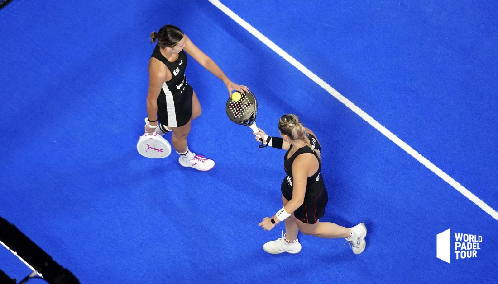

Iglesias y Osoro caminan firmes a sus quintas semifinales
La pareja hispano-argentina conseguía vencer en tres set ante Marrero y Sainz para avanzar a la semifinales del tercer Master de año
23/09/2022
En la pista dos de la Caja Mágica iban a disputar el duelo de cuartos de final la dupla hispano-argentina, Victoria Iglesias y Aranza Osoro, frente a la pareja cuatro, Lucía Sainz y Marta Marrero.
En el primer set la vikinga Aranzazu Osoro y Victoria Iglesias, se hacían con un break nada más comenzar el encuentro poniendo el 2-0. Las favoritas por ranking reaccionaban y recuperaban la distancia para poner el 3-3. Esta igualdad se mantenía hasta que un break y contrabreak se convertían en la antesala de la muerte súbita. El tie break sonreía a la dupla hispano-argentina, Osoro e Iglesias.
Marrero y Sainz, iban mostrar una reacción contundente en el inicio de la segunda manga y colocaban un 3-0 en el marcador. La presión sobre sus rivales continuaba haciendo mella en sus servicios, y el binomio Aranza-Victoria no lograba resurgir. Con este dominio, las número cuatro, Marrero y Sainz, se hacían con la segunda manga por 6-1.
En el definitivo se establecía la igualdad para llegar al 3-3. En este momento, Osoro e Iglesias, se iban a hacer con el servicio de las favoritas en el octavo juego para poner el 5-3. Lo que parecía el final, se convertiría en supervivencia para, Marrero y Sainz, al lograr un break que les llevaba al 4-5. La vikinga, Osoro, y la sevillana, Victoria Iglesias, no iban a perdonar y se hacían con el break definitivo en el tercer set para clasificarse a las semifinales del Estrella Damm Comunidad de Madrid Master 2022 tras conseguir un 7-6 6-1 y 6-4.
